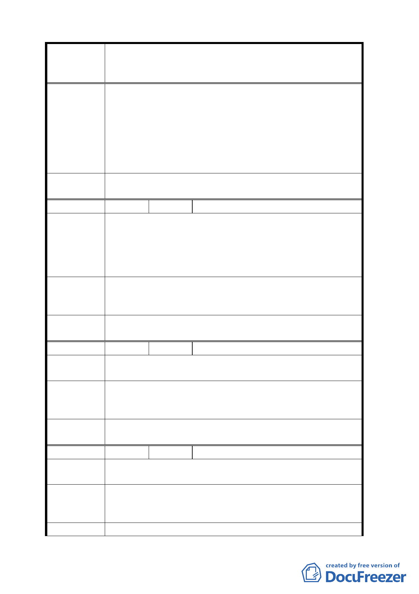

案名
委員會
決議
編號
陳情理由
建議辦法
委員會
決議
編號
陳情理由
建議辦法
委員會
決議
編號
陳情理由
建議辦法
委員會
變更臺北市華光社區暨週邊地區住宅區、電信用地、郵
政用地及變電所用地土地為商業區、數位科技專用區及
金融服務專用區主要計畫案
研究報告來支持，將住宅區變更為商業區未來該土地
並將出售，賣給有辦法的少數財團，住宅區變更為商
業區不是也應該要有變更審議規範？回饋機制？
2.將公園用地變更為住宅區，並註明供安置司法現住戶
使用，興建方式參採眷村改建條例，才符合都市更新
最終目標。
3.若召開本案有關會議，希能通知里長與里民代表參加。
同編號 16 決議。
27 陳情人 郭宏展
1.請市政府依都市更新條例，優先對居民有合理的安置
或補償。
2.合法佔有之現住戶（本人居住於現址計有 50-60 年）
中央政府一朝計畫，既以脅迫方式催告或求償，實讓
小市民等難平。
1.請市政府派專人瞭解狀況及幫助市民以法律或組織現
住戶，以達到照顧市民之責任。
2.希望就地安置或以屋換屋。
同編號 2 決議。
28 陳情人 李德仁
請市府先行考量本案內住戶之安置問題及補償事
宜後再計畫本案。
因住戶地上權為合法持有，請市政府需按市價補償
或在本案興建國宅，原地安置住戶，以屋換屋，或由本
計畫區內住戶購買土地自行興建住宅，照顧市民。
同編號 2 決議。
29 陳情人 陶立德
請市政府在本案規劃住宅區，若將來要標售本地段
時，需由原住戶為第一優先購買者。
請市府依促進民間參與公共建設法，由本地居民自
行投資興建營運。因住戶地上權為合法持有，請原地安
置住戶。
同編號 2 決議。
- 18 -